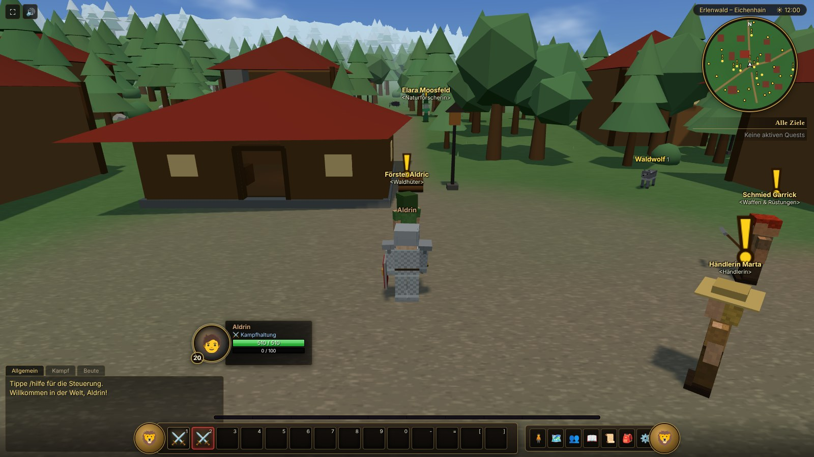
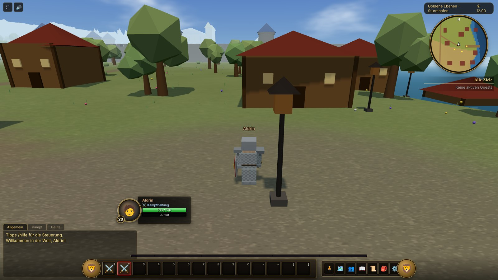
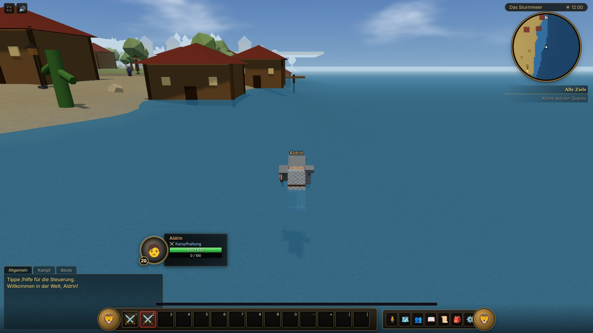
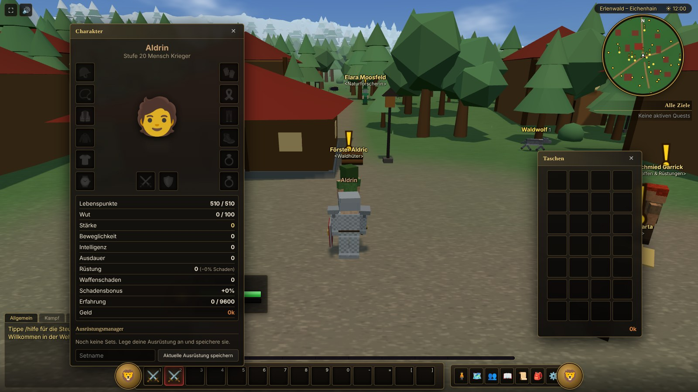
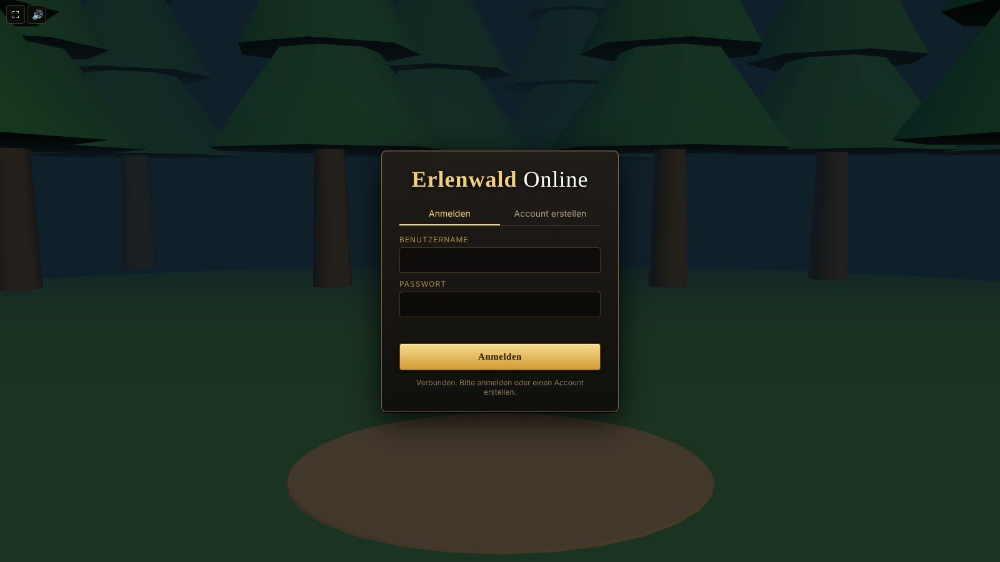

Web-Client
Spielen im Browser, ohne Installation. Ein moderner Browser mit WebGL genügt, auf Windows, Linux, macOS, Tablet und Smartphone.
Nichts zu installieren
Der Server liefert den Client selbst aus. Adresse öffnen, Account anlegen, Charakter erstellen, spielen.
Auch mobil
Auf Touch-Geräten gibt es einen virtuellen Joystick und Tasten für Fertigkeiten. Hochformat und Querformat funktionieren.
Live gerenderte Musik
Orchestrale Themen für jede Landschaft, für Tag und Nacht und für den Kampf, direkt im Browser erzeugt.
Karten-Editor
Für Administratoren gibt es einen Editor, mit dem sich Welt, Orte und Spawns direkt im Browser bearbeiten lassen.
So startest du
- Server starten. Der Web-Client wird vom Spielserver ausgeliefert. Mit Docker:
docker compose up --build, ohne Docker:cd Server && go run ./cmd/server. - Browser öffnen. Rufe
http://localhost:8080(oder die Adresse deines Servers) auf. Mehrere Tabs oder Geräte sind mehrere Spieler. - Account und Charakter. „Account erstellen“, dann Volk, Klasse (Krieger, Jäger, Magier) und Aussehen wählen und die Welt betreten.
- Los geht’s. Sprich mit den Leuten in Eichenhain, nimm Quests an und erkunde die Welt.
Der Web-Client braucht einen laufenden Server. Eine öffentliche Instanz stellt diese Seite nicht bereit, den Server hostest du selbst (siehe Start).
Steuerung
| Bewegen | W A S D, Leertaste springen, R automatisch laufen, Shift gehen |
| Kamera | Rechte Maustaste halten und ziehen, Mausrad zoomt |
| Auswählen und Angreifen | Linksklick wählt aus, Rechtsklick spricht NPCs an, greift Gegner an und plündert Leichen. Tab wechselt das Ziel. |
| Fertigkeiten | 1–0, -, =, [, ] |
| Fenster | B Taschen, L Questlog, C Charakter, P Zauberbuch, M Weltkarte, O Gruppe |
| Chat | Enter oder /. Mit /p in den Gruppenchat, /einladen Name lädt Spieler ein. |
| Touch | Virtueller Joystick links, Fertigkeiten und Aktionen als Tasten, Tippen wählt Ziele aus |
Screenshots
Klicke ein Bild an, um es groß zu sehen.





